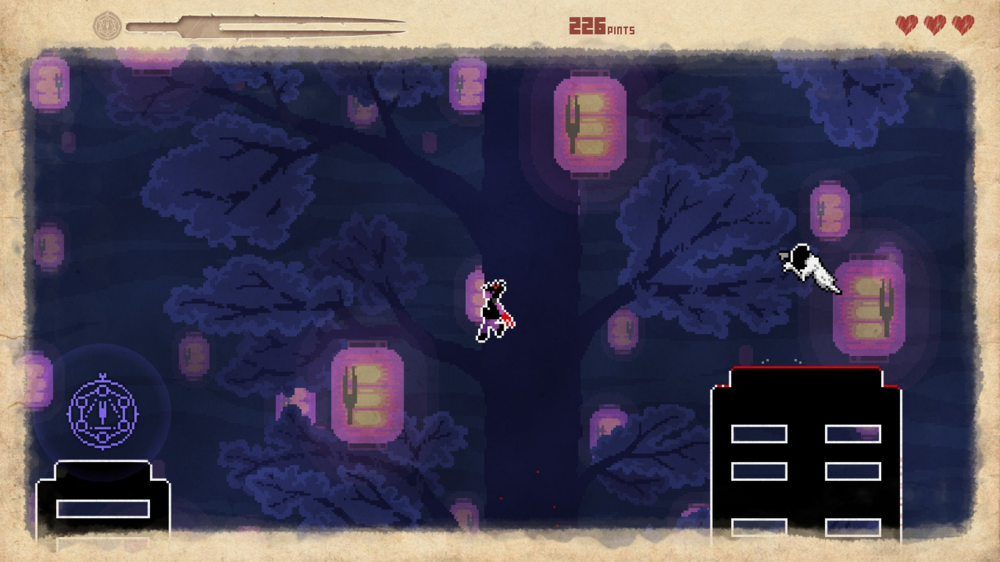
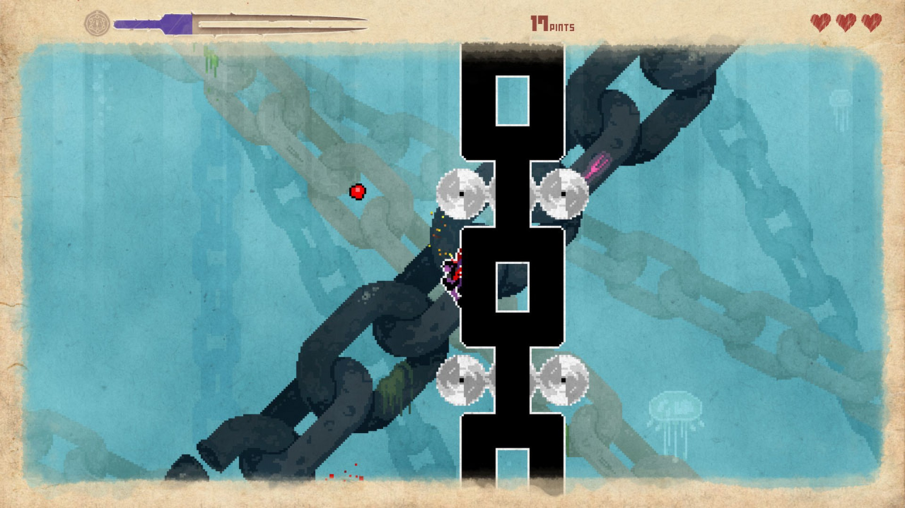
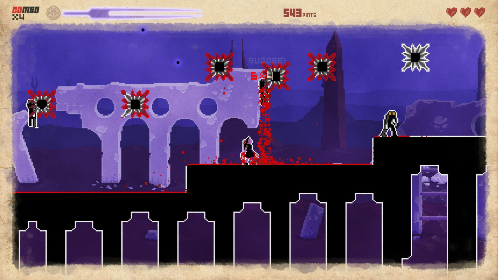
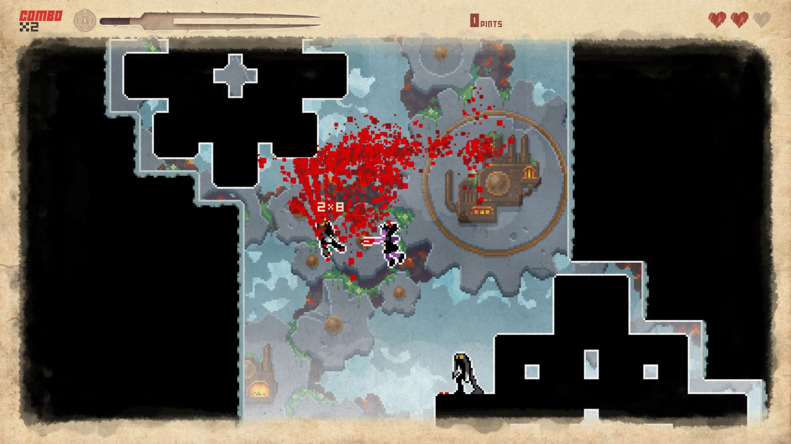

Під час чергового полювання на цікавий платформер я натрапив на цю гру.
Відразу вподобав цю гру через її арт-стиль. Мене зовсім не налякали ті жахіття, що я побачив у трейлері адже я вже дорослий і мене малюнками привидів та плямами крові не налякати…
Що це за підозрілий шурхіт у моїй шафі?..
Як я вже сказав, мене цим не налякати і я хутко придбав гру і почав грати.
Дещо мене все ж налякало - це складність гри. Я розумію, що іноді граю так ніби у мене замість рук - клешні, але це було трохи занадто. Але лишати ігри незакінченими - це не про мене, тож я продовжив тренуватися. Основна складність була у точності рухів і у виборі часу для стрибків бо небезпека чатувала усюди. Через кілька годин я вже опанував геймпад і зміг пройти перший рівень. Я отримав від цього купу позитивних емоцій і вирішив продовжити наступного дня.

Відразу хочу розповісти про керування. Гра дуже радить грати з геймпадом. З клавіатурою я навіть не намагався бо мабуть розбив би її об стіл від злості. Управління у грі дуже просте - кнопка стрибати і кнопка лупцювати. Можна додати розмаїття змінюючи напрямок лупцювання. Щоб набрати якнайбільше очок треба використовувати різні удари та їх комбінації.
Але все це дитячі забавки у порівнянні зі складністю "платформінгу" майже у всіх рівнях. Там треба точно стрибати, чіплятися на за стіни, пригинатися і ухилятись від ворогів і різноманітних пасток. Зберегти прогрес можна лише після того як вб'єш достатньо ворогів. І чим кривавіше це робити тим швидше можна буде зберегти гру. Може здатися, що гра дуже складна. Для мене так і було, але відчуття перемоги після проходження рівня просто неймовірне.

Про таку річь як графіка я можу просто помовчати бо гра розроблена на графічному движку Source - той самий, на якому створено Half-Life 2. На мою думку, навіть сьогодні, у 2018 році гра виглядає чудово. Я зазвичай не даю оцінку графіці, бо для мене це не головне допоки вона допомагає створити правильну атмосферу і у мене не вилазять очі від побаченого.

Я так захопився, що ледь не забув розповісти про сюжет. Він доволі простий - дівчинку привозять до школи для неспокійних дівчаток і їй починаюсь снитися різні жахіття. Щоб прокинутися їй треба пройти до кінця сну так би мовити. Сюжет хоча і простий але створює відчуття мети щоб гра не здавалася купою рівнів ніяк не пов'язаних між собою.
Кожний рівень має свою тему. Як структурну, візуальну так і музичну. Музична складова мені дуже сподобалась. Дуже цікавий і трохи незвичний електронний музичний супровід. Музику складно оцінити об'єктивно, тож можу просто сказати, що музика мені дуже сподобалась.
Пройти гру мені вдалося за годин 30 і я пишаюсь собою оскільки лише кілька відсотків людей змогли її завершити. Після закінчення я пройшов бонусні рівні, які були створені у співпраці з іншими розробниками. У кожного з них своя тема і своя музика. Було цікаво і весело.

Раджу спробувати цю гру якщо ви полюбляєте складні ігри і готові тренуватися фізично і морально. Якщо хочете розслабитися, то спробуйте "легкий" рівень складності. Я взяв слово у лапки бо гра не стає легкою, може легшою.
Якщо вам сподобався цей огляд, підписуйтесь на мої сторірки у Steam та Facebook щоб отримувати сповіщення про нові огляди та статті. Ви також можете залишити коментар в обговоренні на сторінці у Steam.
Перейти до обговорення у групі
Реклама